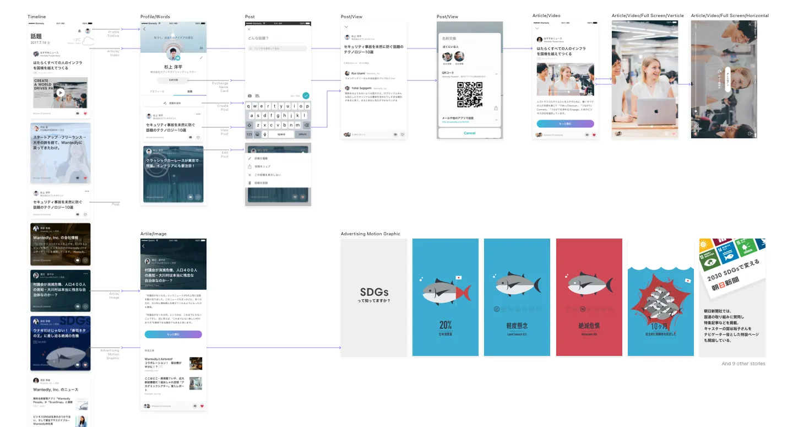
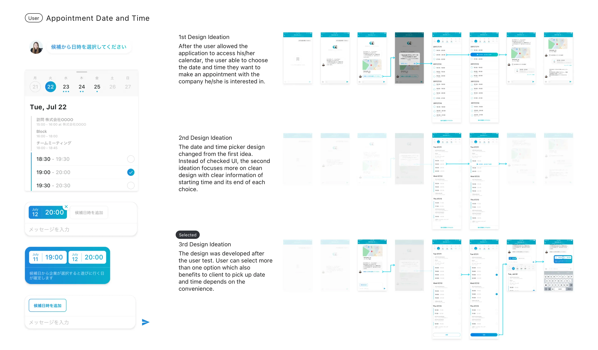
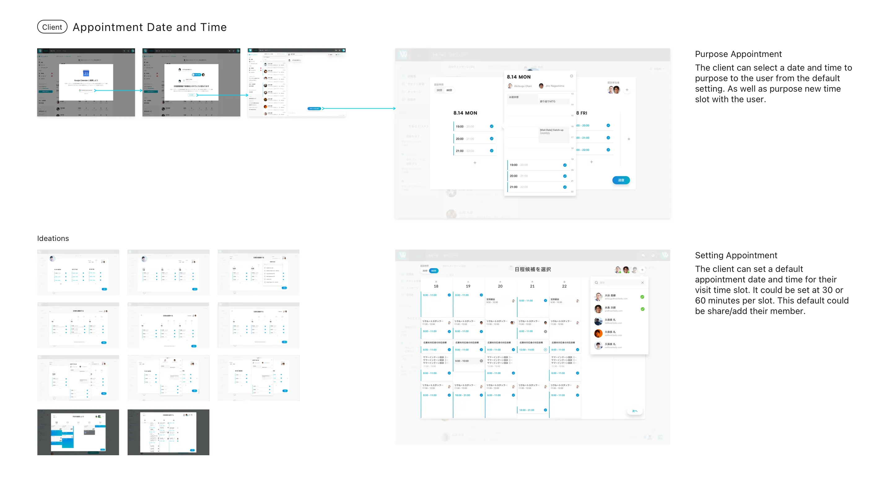
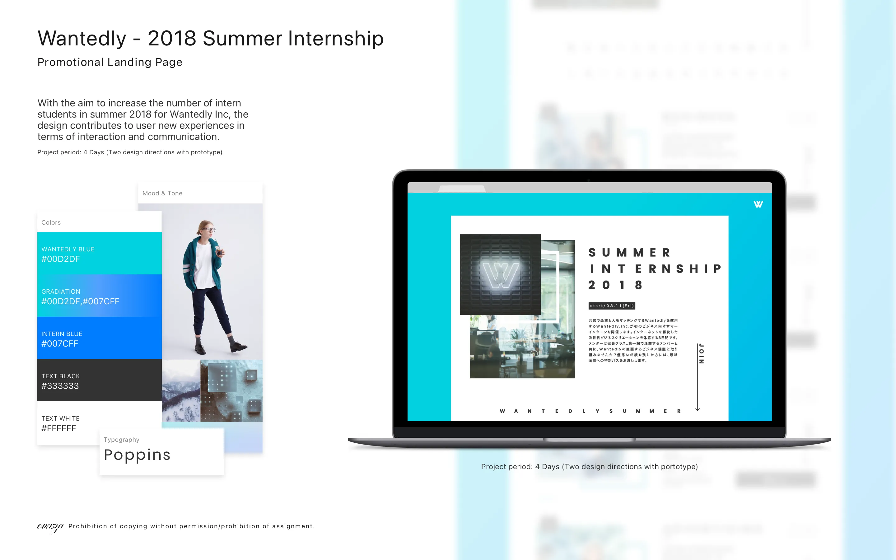
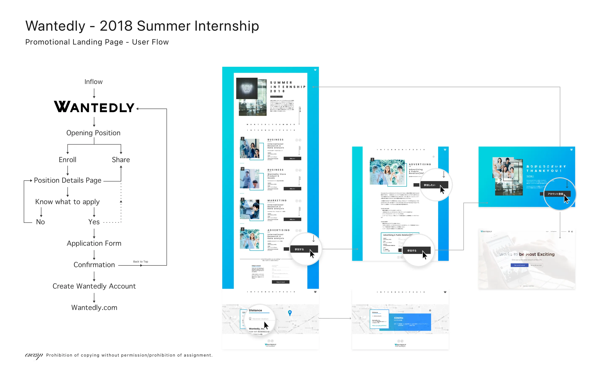
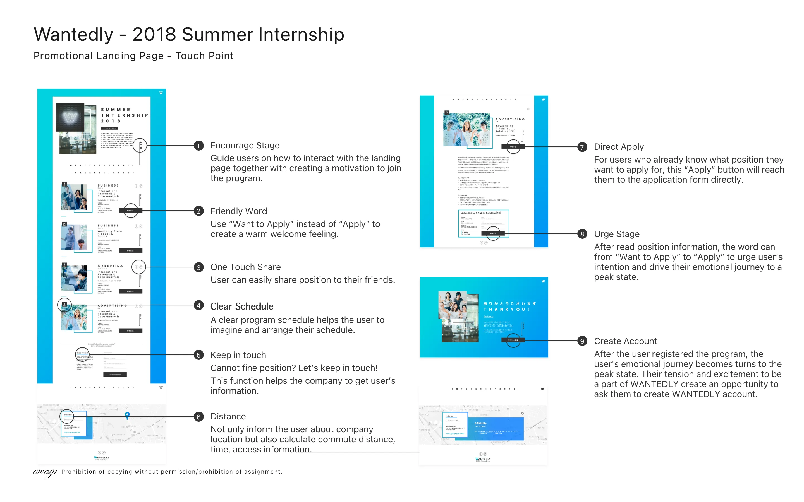
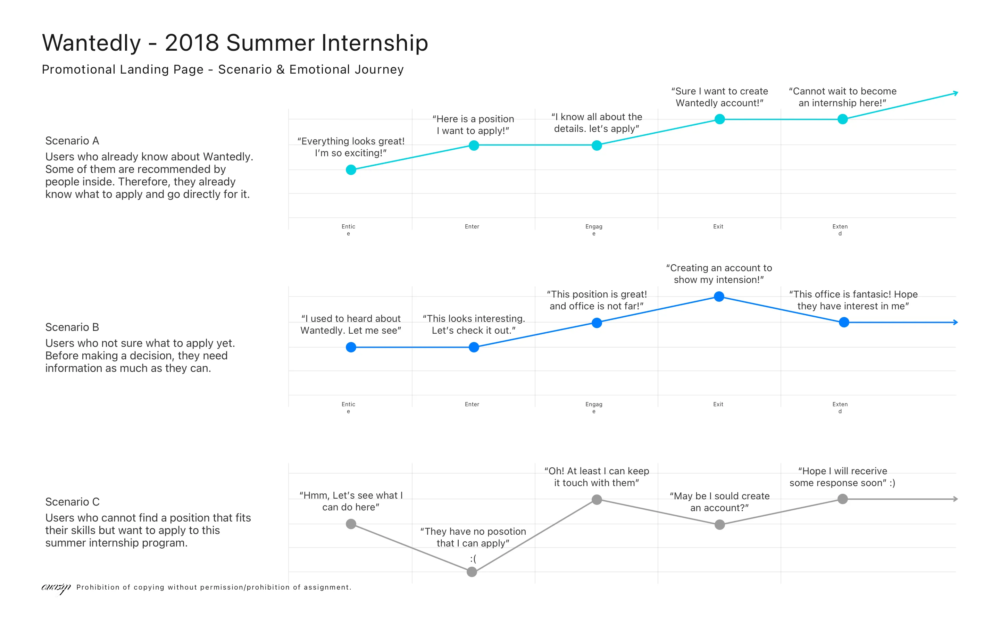
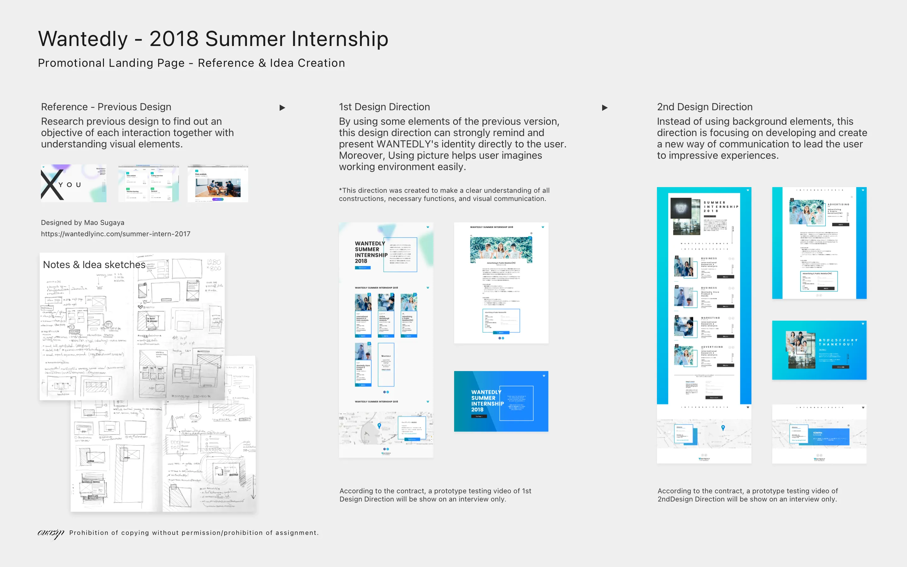

Wantedly
The Boot Camp — Where Every Skill Was Forged Under Pressure
The Situation
Wantedly had three products — Visit (a job board), People (a business card scanning app), and the corporate platform. Each had its own designer. I was hired as the fourth — not assigned to any single product, but to all of them. Wherever a team needed more hands, I was there. Feature design, user flows, prototyping, motion graphics, landing pages, visual direction. If it needed doing and no one else could do it, it was mine.
The company was in growth mode, rapidly adding features to acquire users. The pace was relentless. I regularly worked from 7am to midnight. At one point, I deleted my own files and started a project over from scratch because there was no other way forward.
It was the hardest nine months of my career. It was also the most formative.
The Work
Wantedly People — Timeline Feature
A new social timeline for the business card scanning app, designed to increase organic users through daily conversations and generate advertising revenue through sponsored content. I designed the full feature: timeline feed, profile timeline, article and video formats, post creation, and advertising motion graphics.

My contributions across Wantedly's products helped raise weekly active users by roughly 230% and reduced cost per install by roughly 84% through the digital promotional materials I created.
The motion graphics were entirely new to me. I'd never done animation before this project. I was assigned the work, given a deadline, and figured it out — learning the craft while delivering production-quality output. That skillset has stayed with me ever since.
Beyond product design, I also handled photography — company events, product advertising, and team member profile pictures. Whatever needed doing.
Wantedly Visit — Appointment Booking
Designed the date and time booking feature for both sides: job seekers selecting visit slots, and companies managing their availability. The design went through three iterations, each refined through user testing — from a basic checked UI, to a cleaner time-range display, to a multi-select system that benefited both parties. The final version let users propose multiple time slots, giving companies flexibility to choose what worked.


Wantedly Summer Internship 2018 — Landing Page
Delivered in 4 days. Two complete design directions with interactive prototypes.
Designed a full promotional landing page for Wantedly's summer internship program. This wasn't just a page — it was a conversion system with nine deliberate touchpoints, each mapped to an emotional journey across three user scenarios:
- Users who already know what to apply for (direct path)
- Users exploring options and needing information (discovery path)
- Users who can't find a fit but want to stay connected (retention path)
Micro-decisions throughout: "Want to Apply" instead of "Apply" to soften the commitment language. A "Keep in Touch" option for users who didn't find a matching position — capturing leads the previous design lost entirely. Commute distance calculation to reduce a practical concern before it became a barrier. Account creation placed at the emotional peak — right after application confirmation — when motivation is highest.
All internship positions were filled.





The Impact
| Metric | Change |
|---|---|
| Weekly active users | ~+230% |
| Cost per install | ~−84% |
| Summer internship positions | All filled |
The Lesson
The numbers are real, but what Wantedly gave me was something harder to quantify: the ability to learn anything under pressure and deliver it at quality.
Motion graphics I'd never touched before. User flow documentation I'd never structured at this scale. Emotional journey mapping, scenario planning, multi-stakeholder feature design — all learned on the job, all shipped to production.
Nine months of being the designer who says yes to everything, figures it out overnight, and delivers in the morning.
"The pace was unsustainable. The skills were permanent."
Every project I've done since — the precision at Ogilvy, the systems thinking at Fidelity, the product ownership at Toranoko and UMITRON — traces back to this period. Wantedly didn't teach me design theory. It taught me how to survive as a designer, and how to turn survival into craft.